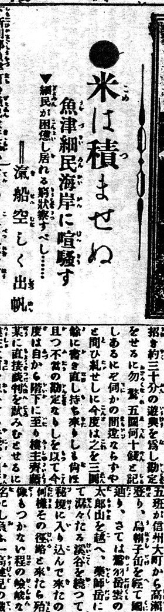
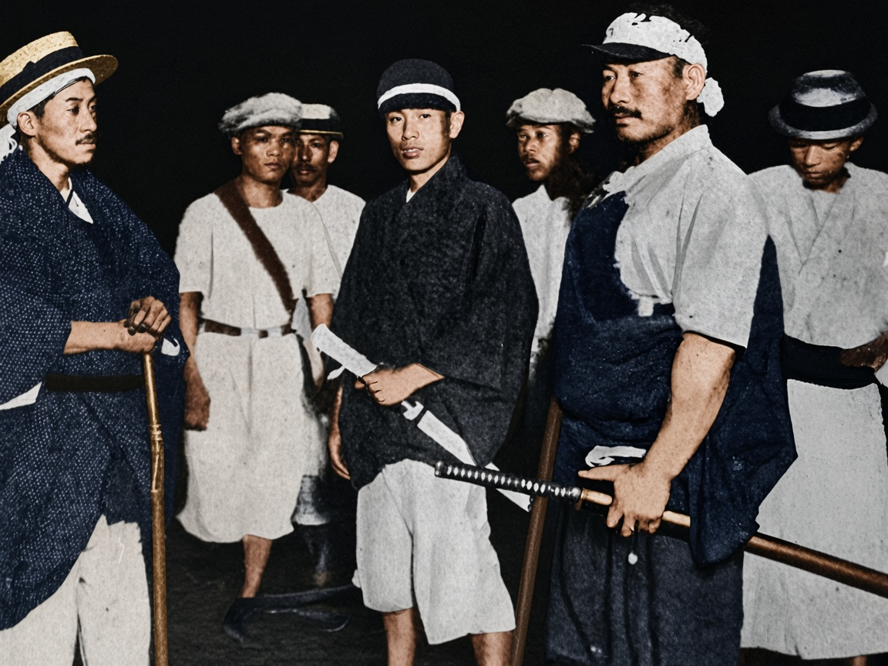
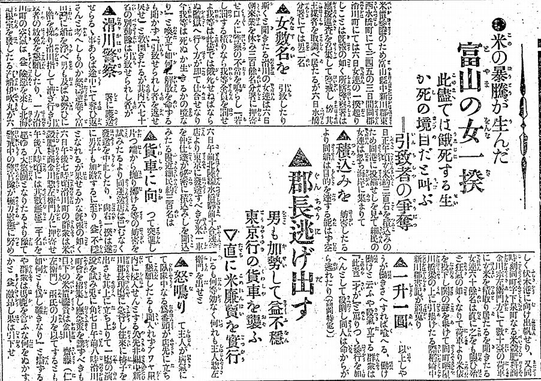
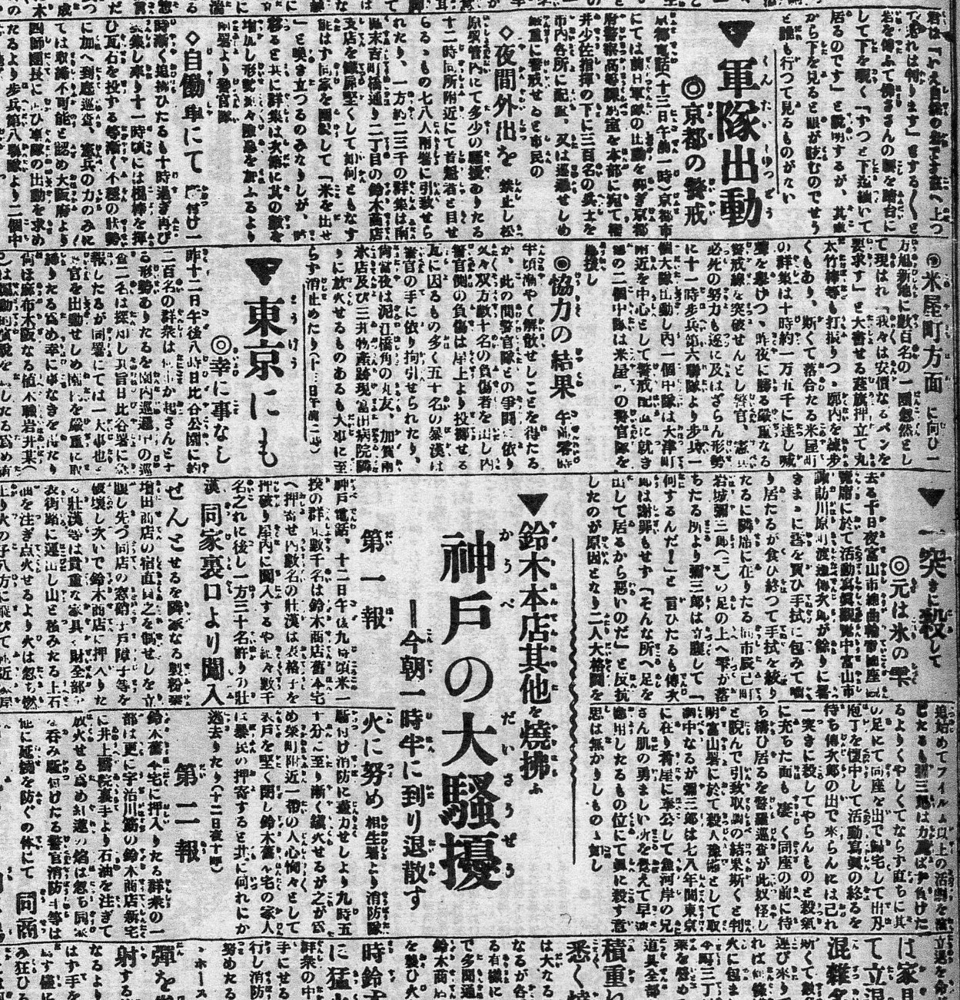
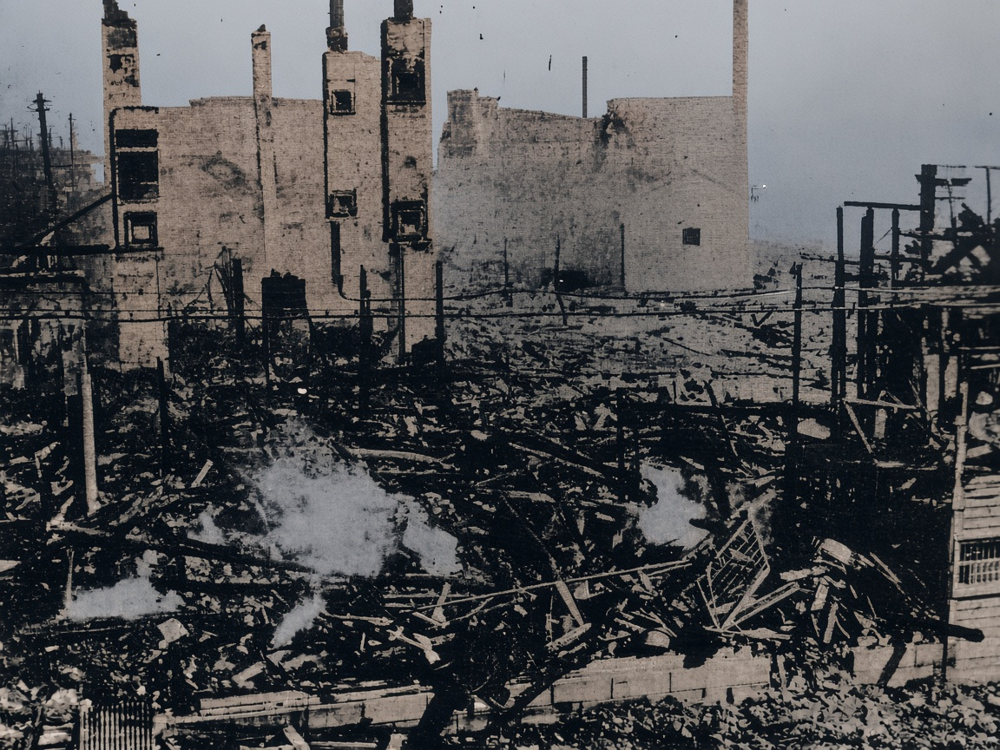

01 · 1918年7月25日 · 富山日报
米不许装上去

大标题是「米は積ませぬ」，米不许装上船。旁边一行：鱼津的细民在海岸上喧哗。再旁边：渔船空空地出海。同一版上方有一张立山开山的风景，不是拦米的人，所以没有裁进来。
鱼津在富山湾东边，是渔村。本地米被装船运走，岸上的人吃不起。拦的是运出，不是先去砸城里的米店。文件说明写的是「细民妨害米的运出」。女人占多数，是后来的报道才写明的。
大正七年 · 米骚动
1918 年夏天，富山湾边的人拦住要运走的米。消息登出去以后，大阪、神户、东京的米店挨了砸。寺内内阁撑到 9 月 21 日辞职。原敬的政党内阁在 9 月 29 日接上。
岸上拦米的女人，这批公版材料里没有一张站在海边的照片，只有报纸。东京的街面照片也没有，东京写在 8 月 13 日的标题里。大阪有一张在乡军人的照片，神户有铃木商店烧过的房子。照片着色是推定。报纸不上色。点图放大。

01 · 1918年7月25日 · 富山日报

大标题是「米は積ませぬ」，米不许装上船。旁边一行：鱼津的细民在海岸上喧哗。再旁边：渔船空空地出海。同一版上方有一张立山开山的风景，不是拦米的人，所以没有裁进来。
鱼津在富山湾东边，是渔村。本地米被装船运走，岸上的人吃不起。拦的是运出，不是先去砸城里的米店。文件说明写的是「细民妨害米的运出」。女人占多数，是后来的报道才写明的。
02 · 1918年8月8日 · 东京朝日新闻

标题把这件事写成女一揆：米价暴涨生出来的、富山女人的骚动。报道点了中新川郡的东水桥、西水桥和滑川。版面是竖排，这里不逐行转录。
从鱼津到全国，中间隔了大约两周。西伯利亚出兵的消息在 8 月初传开，米商囤货，城里的价钱跳得更快。报纸把富山的事叫成女人的一揆，后面城市里的骚动就跟着来了。
03 · 1918年8月13日 · 高冈新报

这一块里的大标题有：军队出动、京都的警戒、东京にも、神户的大骚扰、铃木本店和其他被烧掉。东京的街面照片不在这批公版材料里。能对上的，是这行「东京也有了」。
东京的骚动在 8 月 13 日前后，深川、本所一带的米店被砸，后来军队出动。大阪也在这几天。这一版把城市的名字和军队放在一起。被捕的人后来大约两万多。确切的店名和人数，这一栏读不全，不在这里补。
04 · 1918年8月 · 大阪
七个男人站在暗处。有人戴草帽，有人扎头巾，有人穿白短褂。手里是木棒。中间一个人把刀横在身前。这不是砸米店的人群，是被叫出来守街的人。
大阪的骚动打的是米店。这张照片站在另一边。衣服的蓝和白是着色加上的。原片是粗网点，脸不能拿来认人。
05 · 1918年8月 · 神户

墙还立着，窗是空的。地上是烧过的梁和铁。烟从瓦砾里冒出来。人已经不在画面里。
铃木商店是神户的大商社，做贸易，也碰米。骚动的人把它当成囤米的那一家。神户和大阪隔一条湾，8 月 12 日前后神户烧了这家，大阪同时在砸米店。墙的颜色是着色推定。原片糊，窗洞和烟的位置以原片为准。